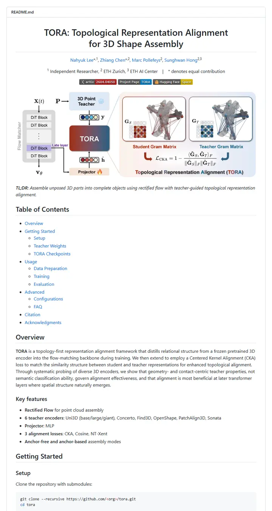

NahyukLEE/tora
A method poster pinned above a well-kept manual: a two-line centred title, three slim badges, one wide red-to-blue architecture figure, then a nested contents list that hands you the rest.

Checked against the rendered page. Venue (ECCV 2026) appears nowhere in the README; clone command keeps a literal <org> placeholder; shields.io served 'yellow' as #d8b800, not the #dfb317 in METHOD_README's named-color list (served value used).
Why it is here
The wide method teaser is crisp, a one-line italic TL;DR follows it, and the nested table of contents, Key features list and small weights table are cleanly formatted.
Overview
Header Block
Badge Colors
Section Outline
Guidelines
More like this

adobe-research/obj-and-mat-selection
A conference proceedings page with its own table of contents: bold names on a centred line, a small ACM SIGGRAPH seal, six slim tags, and a grid of watermelon and kitchen shots washed in teal where the model chose.

Chuan-10/AGILE
A lab bench under bright light: a five-letter name, a strip of heavy uppercase tags, then a contact sheet of hands gripping scissors, mugs and controllers.

coral-lab-asu/CRAFT
A tool manual with a conference ribbon: one centred title, a long strip of emoji-tagged badges, a dotted link bar, then a three-row table that explains the whole method before the first install line.

damon-demon/SpanUQ
A command-line tool's manual with a conference stamp: a bracketed headline, four small colored tabs, a dotted jump bar, and numbers before the first paragraph ends.

deepmancer/HairPort
A paper laid out as a press kit: a row of loud capital-letter tags, a dated bulletin, and numbered figures that each carry a caption like a journal page, all separated by thick grey rules.

donaldssh/K-Merge
A conference title slide pinned to a white wall: one centred heading, a quiet credit block, a short strip of grey-and-color tags, then a pastel block diagram that tells the story before a word of prose.